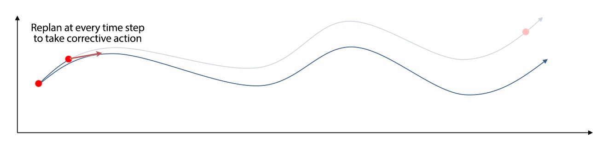
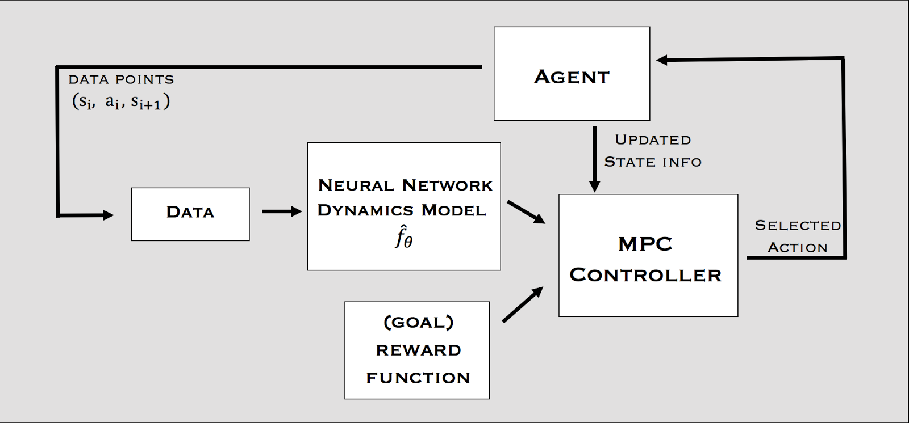
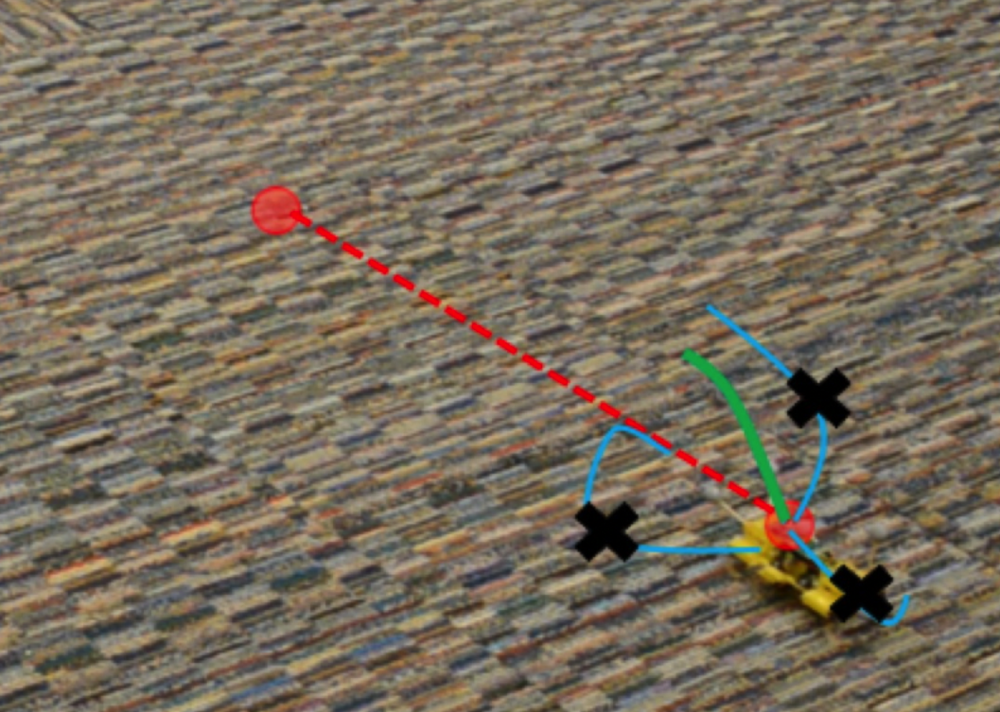
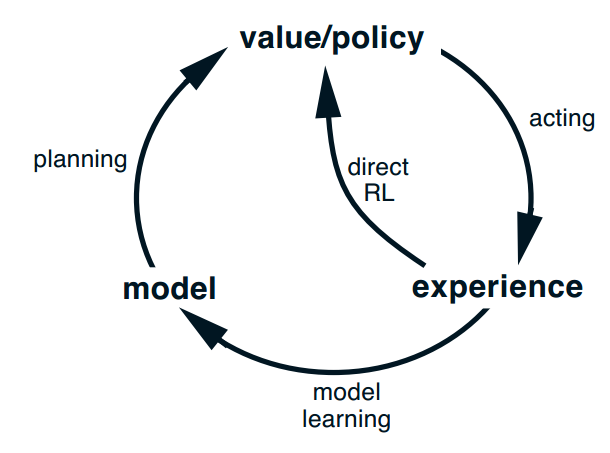

Model-based RL
Model-free vs. model-based RL
In model-free RL (MF) methods, we do not need to know anything about the dynamics of the environment to start learning a policy:
p(s_{t+1} | s_t, a_t) \; \; r(s_t, a_t, s_{t+1})
We just sample transitions (s, a, r, s') and update Q-values or a policy network. The main advantage is that the agent does not need to “think” when acting: just select the action with highest Q-value (reflexive behavior). The other advantage is that you can use MF methods on any MDP: you do not need to know anything about them. But MF methods are very slow (sample complexity): as they make no assumption, they have to learn everything by trial-and-error from scratch.

If you had a model of the environment, you could plan ahead (what would happen if I did that?) and speed up learning (do not explore stupid ideas): model-based RL (MB). In chess, players plan ahead the possible moves up to a certain horizon and evaluate moves based on their emulated consequences. In real-time strategy games, learning the environment (world model) is part of the strategy: you do not attack right away.
Model Predictive Control (MPC)
Learning the world model is not complicated in theory. We just need to collect enough transitions s_t, a_t, s_{t+1}, r_{t+1} using a random agent (or during learning) and train a model to predict the next state and reward.
Such a model is called the dynamics model, the transition model or the forward model: What happens if I do that? The model can be deterministic (use neural networks) or stochastic (use Gaussian Processes). Given an initial state s_0 and a policy \pi, you can unroll the future using the local model.
Once you have a good transition model, you can generate rollouts, i.e. imaginary trajectories / episodes using the model.
\tau = (s_o, a_o, r_ 1, s_1, a_1, \ldots, s_T)
You can then feed these trajectories to any model-free algorithm (value-based, policy-gradient) that will learn to maximize the returns.
\mathcal{J}(\theta) = \mathbb{E}_{\tau}[R(\tau)]

The only sample complexity is the one needed to train the model: the rest is emulated. Drawback: This can only work when the model is close to perfect, especially for long trajectories or probabilistic MDPs.
For long horizons, the slightest imperfection in the model can accumulate (drift) and lead to completely wrong trajectories. The emulated trajectory cannot be generated by the current policy \pi_\theta, the policy gradient is biased (especially if you are on-policy), the algorithm does not converge. If you have a perfect model, you should not be using RL anyway as classical control methods would be much faster (but see AlphaGo).

The solution is to replan at each time step and execute the first planned action in the real environment.

Model Predictive Control iteratively plans complete trajectories, but only selects the first action.


The planner can actually be anything, it does not have to be a RL algorithm. For example, it can be iLQR (Iterative Linear Quadratic Regulator), a non-linear optimization method (see https://jonathan-hui.medium.com/rl-lqr-ilqr-linear-quadratic-regulator-a5de5104c750).
Alternatively, one can use random-sampling shooting:
- in the current state, select a set of possible actions.
- generate rollouts with these action and compute their returns using the model.
- select the action whose rollout has the highest return.

The main advantage of MPC is that you can change the reward function (the goal) on the fly: what you learn is the model, but planning is just an optimization procedure. You can set intermediary goals to the agent very flexibly: no need for a well-defined reward function. Model imperfection is not a problem as you replan all the time. The model can adapt to changes in the environment (slippery terrain, simulation to real-world).


Dyna-Q
Another approach to MB RL is to augment MF methods with MB rollouts. The MF algorithm (e.g. Q-learning) learns from transitions (s, a, r, s') sampled either with:
- real experience: interaction with the environment.
- simulated experience: simulation by the model.

If the simulated transitions are good enough, the MF algorithm can converge using much less real transitions, thereby reducing its sample complexity. The Dyna-Q algorithm (Sutton, 1990) is an extension of Q-learning to integrate a model M(s, a) = (s', r'). The model can be tabular or approximated with a NN.
Initialize values Q(s, a) and model M(s, a).
for t \in [0, T_\text{total}]:
Select a_t using Q, take it on the real environment and observe s_{t+1} and r_{t+1}.
Update the Q-value of the real action:
\Delta Q(s_t, a_t) = \alpha \, (r_{t+1} + \gamma \, \max_a Q(s_{t+1}, a) - Q(s_t, a_t))
- Update the model:
M(s, a) \leftarrow (s_{t+1}, r_{t+1})
for K steps:
Sample a state s_k from a list of visited states.
Select a_k using Q, predict s_{k+1} and r_{k+1} using the model M(s_k, a_k).
Update the Q-value of the imagined action:
\Delta Q(s_k, a_k) = \alpha \, (r_{k+1} + \gamma \, \max_a Q(s_{k+1}, a) - Q(s_k, a_k))

It is interesting to notice that Dyna-Q is very similar to DQN and its experience replay memory. In DQN, the ERM stores real transitions generated in the past. In Dyna-Q, the model generates imagined transitions based on past real transitions.